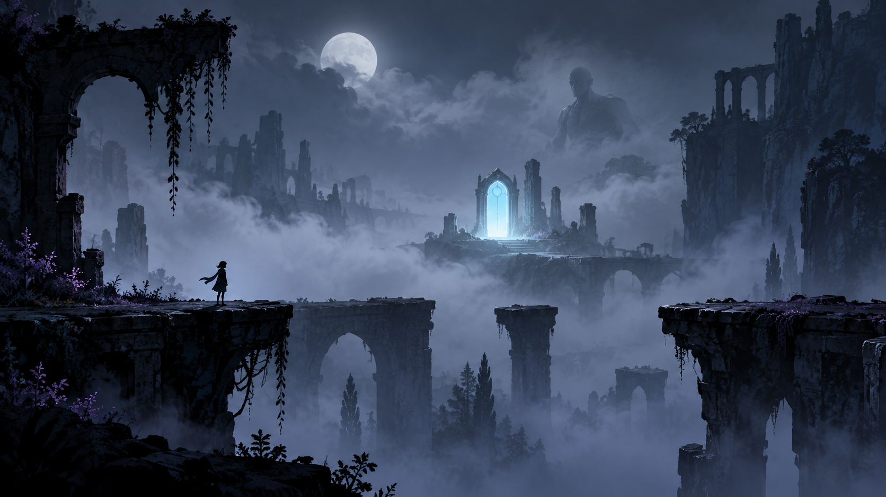

Game design · interactive presentation
Depth
Perception
Depth Perception is a short atmospheric platform-game concept about crossing three versions of the same place. A recurring door guides the player through a world where visual certainty and mechanical truth are deliberately different.
The project brings together game systems, interaction design, narrative structure, prototype analysis, and AI-assisted visual direction in a complete seven-part presentation.
